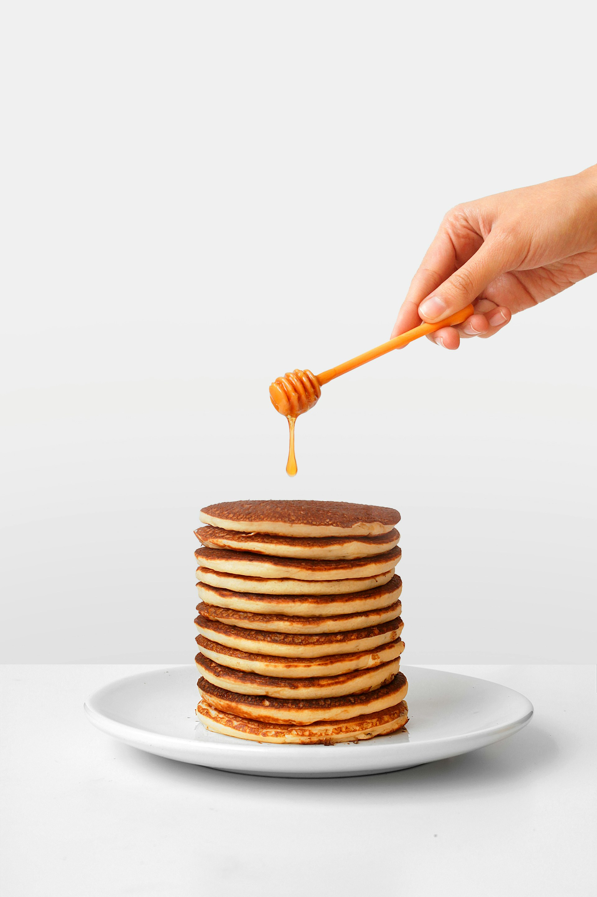

Ingredients
- 1 cup all-purpose flour
- 2 tablespoons sugar
- 1 teaspoon baking powder
- 1/2 teaspoon baking soda
- 1/2 teaspoon salt
- 1 cup buttermilk
- 1/2 cup milk
- 1 large egg
- 2 tablespoons melted butter
- 1 teaspoon vanilla extract
Instructions
-
In a large bowl, whisk together the flour, sugar, baking powder,
baking soda, and salt.
-
In another bowl, combine the buttermilk, milk, egg, melted butter,
and vanilla extract.
-
Pour the wet ingredients into the dry ingredients and stir until
just combined.
-
Heat a non-stick skillet over medium heat and lightly grease with
butter or oil.
- Pour 1/4 cup of batter onto the skillet for each pancake.
-
Cook until bubbles form on the surface, then flip and cook until
golden brown.
- Serve warm with your favorite toppings.